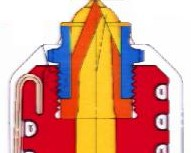
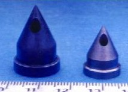
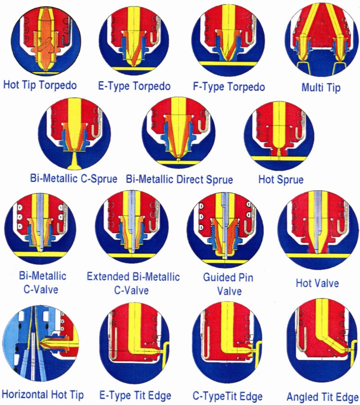

|
3- Yolluk giriþ boyutlarýný etkileyen faktörler
Yolluk giriþinin boyutlandýrýlmasýnda dikkate alýnmasý gereken temel kriterler aþaðýda özetlenmiþtir.
Parça aðýrlýðý ve büyüklüðü: Plastiðin kalýp gözü içindeki akýþ mesafesi ve çekirdeðin yüzeyi ne kadar büyük ise yolluk giriþ çapý da doldurma basýncýný azaltmak ve yolluk giriþinde bir donma olmadan yeterli malzeme beslemesini yapacak kadar büyük olmalýdýr.
Parça et kalýnlýðý: Et kalýnlýðý büyük olan parçalarda, ütüleme basýncý sýrasýndaki çekmeleri karþýlayacak malzemeyi besleyebilmek için büyük yolluk giriþleri kullanmak gerekir. Düþük kesitli yolluk giriþleri ile çarpýlmýþ veya tam dolmamýþ parçalar elde edilir. Genellikle yolluk giriþinin çapý parça et kalýnlýðýndan daha küçüktür. Et kalýnlýðý 1mm'nin altýnda olan parçalarda ise yolluk giriþi çapý, basýnç düþüþünü önlemek için et kalýnlýðýndan büyük seçilir.
Polimer cinsi: Polimer viskozitesi ne kadar yüksek ise, yolluk giriþi ucunda büyük çap ve küçük yükseklik (derinlik) seçilmesi malzeme akýþýndaki sýnýrlamalarý ortadan kaldýrýr. Enjeksiyon malzemesinin amorf veya kristalin olmasýna göre yolluk giriþ tipinin boyutlandýrýlmasýna dikkat etmek, sýcak yolluk üreticisi firmalarýn tecrübelerinden yararlanmak gerekir.
Soðutma sisteminin konumu: Yolluk giriþine göre doðru konumlandýrýlmayan soðutma (ýsý regülasyonu) kanallarý sýcak yolluk sisteminin çalýþmasýnda problemler yaratýr. Yolluk giriþine çok yakýn yerleþtirilen soðutma kanallarý giriþte ön donmaya, çok uzaða yerleþtirilenlerde sýcak giriþler ve damlamalara neden olacaktýr. Üretici firmanýn tavsiyelerine göre yolluk giriþlerindeki soðutma kanallarýnýn konumlandýrýlmasý gerekir. Kalýp tasarýmý bu konumlandýrmaya izin vermiyor ise prensip olarak giriþe yakýn soðutma kanallarýnýn kullanýlmasý durumunda (soðuk uç) giriþleri büyütmek, giriþe uzak kanallarýn yerleþtirilebilmesi durumunda da (sýcak uç) giriþleri küçültmek giriþin kontrolüne yardýmcý olacaktýr. Yolluk giriþ ucundaki sýcaklýðý kontrol etmek parça kalitesi açýsýndan da çok önemlidir. Yolluk giriþ ucunun etrafýnda ve kalýbýn erkek tarafýnda giriþin tam karþýsýnda ayrý bir soðutma çevrimin kalýp tasarýmýnda daima dikkate almak gerekir.
Enjeksiyon hýzý: Çok yüksek enjeksiyon hýzlarý kullanýlmasý durumunda, yolluk giriþinde plastiðin aþýrý þekil deðiþimi kesmeleri (shearing) altýnda bozulmasýna-degrade olmasýna ve basýnç düþüþlerine mani olmak için yolluk giriþi büyük seçilir. Yolluk giriþlerinde çok yüksek akýþ hýzlarýnýn ve þekil deðiþimi kesmelerinin oluþtuðu unutulmamalýdýr.
Örnek olarak, 106g aðýrlýðýnda PS bir parçanýn (100cm³) enjeksiyonu 1 saniyede yapýlýr ise, Q (malzeme akýþ hýzý) 100cm³/s olacaktýr. Yolluk giriþinin kesiti 1mm²ise, yolluk giriþindeki enjeksiyon hýzý 100.000 mm³/1mm² = 100.000 mm/sn veya 100m/sn yaklaþýk olarak ses hýzýný 1/3'ü olmaktadýr. Bu þartlarda üç misli büyüklükte bir parça basýlýrsa yolluk giriþinde ses hýzýna eriþilecektir. Ortalama þekil deðiþimi kesme hýzý (y, 1/sn) için y(1/sn) = 4 Q / pi r³ formülü dikkate alýnýr ise, yolluk kesitindeki maksimum kesme deðeri için yaklaþýk olarak 500.000 sn^-1 deðeri hesaplanýr. Bu deðer bir çok plastik için çok yüksek bir deðerdir ve enjeksiyonu yapýlan plastiðin bozulmamasý için ya enjeksiyon hýzýný azaltmak yada yolluk kesitini arttýrmak gerekir.
Çeþitli plastikler için müsaade edilebilen maksimum kesme gerilmelerinin ve hýzlarýnýn deðeri aþaðýdaki tabloda verilmiþtir;
TABLO - 1: Çeþitli Malzemelerin Maksimum Kesme Gerilmeleri ve Kesme Hýzlarý
Malzeme |
Max. Kesme Gerilmesi (Mpa) |
Max. Kesme Hýzý (sn^-1) |
PP |
250 000 |
100 000 |
HDPE |
80 000 |
40 000 |
LDPE |
80 000 |
40 000 |
PS |
250 000 |
40 000 |
HIPS |
300 000 |
40 000 |
SAN |
300 000 |
40 000 |
ABS |
300 000 |
50 000 |
PPS |
345 000 |
50 000 |
NYLON |
500 000 |
60 000 |
PET |
500 000 |
6 000 |
PUR |
250 000 |
40 000 |
PBT |
400 000 |
50 000 |
Eriyik sýcaklýðý: Eðer polimer müsaade edilen maksimum sýcaklýkta basýlýyor ve kalýp doldurulamýyor ise küçük bir yolluk giriþi seçilip, artýrýlan kesme hýzlarýnýn getireceði sýcaklýk artýþý ile plastiðin viskozitesi düþürülebilir ve plastiðin akýþkanlýðý arttýrýlýr.
Giriþ geometrisi: Yolluk giriþlerinde plastiðin rahat akýþýna engel olabilecek tüm keskin köþelerden kaçýnmak gerekir. Plastiðin akýþýný rahatlatan büyük radyüsler kalýbýn diþi tarafýndaki yolluk giriþi tasarýmýnda dikkate alýnmalýdýr. Özellikle aþýndýrma etkisi yüksek katkýlý plastikler kullanýldýðýnda yolluk giriþindeki çok yüksek akýþ hýzlarý dikkate alýnarak, kalýp giriþindeki aþýnmalarý azaltmak ve giriþteki çeliðin direncini arttýrmak için sivri ve keskin kesitlerden kaçýnmak gerekir.
Yolluk giriþ boyutunun seçiminde dikkate alýnmasý gereken çeþitli faktörlere göre giriþ kesitinin uygunluðu TABLO 2 de özetlenmiþtir.
TABLO - 2: Yolluk Kesiti Büyüklüðünün Çeþitli Kriterlere Uygunluðu
YOLLUK KESÝTÝ |
KÜÇÜK |
ORTA |
BÜYÜK |
MALZEME ÖZELLÝKLERÝ |
Yapý |
Amorf |
Kýsmi Kristal |
Kristal |
Moleküler Aðýrlýk |
Düþük |
Orta |
Yüksek |
Akýþ Ýndeksi (MFI) |
Yüksek |
Orta |
Düþük |
Katký |
Yok |
Düþük Oranlý |
Yüksek Oranlý |
Yanmazlýk Katkýsý |
Olmamalý |
|
Olabilir |
Isý, Kesme Hassasiyeti |
Uygun Deðil |
Kabul Edilebilir |
Uygun |
Malzemenin Katýlaþma Hýzý |
Yavaþ |
Orta |
Hýzlý |
PARÇA ÖZELLÝKLERÝ |
Aðýrlýðý |
Küçük |
Orta |
Büyük |
Et Kalýnlýðý / Akýþ Mesafesi |
Küçük |
Orta |
Büyük |
Toleranslar |
Geniþ |
Orta |
Dar |
Yolluk Giriþ Ýzi / Artýðý |
Çok Ýyi |
Ýyi |
Zayýf |
Kullaným amacý |
Görüntüsel |
|
Teknik |
Enjeksiyon Özellikleri |
Sýcaklýk Aralýðý |
Geniþ |
Orta |
Dar |
Enjeksiyon Hýzý |
Düþük |
Orta |
Yüksek |
Basýnç Düþüþü |
Büyük |
Normal |
Düþük |
Ütüleme Basýncý Etkisi |
Az |
|
Çok (Etkin) |
Yolluk giriþlerinin boyutlandýrýlmasý için geçmiþ tecrübelerden yararlanabilinir. Bugün kaliteli sýcak yolluk üreticileri tüm sýcak yolluk sistemini ve yolluk giriþlerinin boyutlandýrýlmasýný bilgisayar simülasyon programlarý yardýmý ile yapmaktadýrlar. Yolluk giriþ tiplerinin seçiminde ve giriþ kesitlerinin boyutlandýrýlmasý için mutlaka sýcak yolluk üreticisi firmanýn bilgilerinden yararlanmak ve tasarým önerilerine uymak gerekir.
4- Yolluk giriþ uçlarýnda Mold Masters teknolojisi
Mold Masters en yenilikçi geliþmeleri, yolluk giriþ ucu uygulamalarýnda yapmýþtýr. Hemen hemen her tipteki yolluk giriþ ucu uygulamasýnda geliþtirmeler yapýlmýþ ve halen de yapýlmaya devam edilmektedir. Deðiþtirilebilir vidalý yolluk giriþ uçlarý, istenilen parça kalitesine, kullanýlan malzeme cinsine ve parça üzerindeki müsaade edilen yolluk izine göre seçilebilmektedir. Enjeksiyonu kritik olan ve hassasiyet gerektiren polimerlerde yolluk giriþ ucunda istenilen ýsýl þartlarý saðlayabilmek için giriþ uçlarýnda özel alaþýmlar ve kompozit malzemeler kullanýlmaktadýr. Yolluk giriþ ucunda daha yüksek ýsý iletimi elde edebilmek ve ucun aþýnma mukavemetini arttýrmak için giriþ uçlarýnda Mold Masters'ýn patenti olan tungsten karbür uçlar kullanmaktadýr. Yüksek ýsý iletim katsayýsý özelliklerine sahip özel bir tungsten karbür toz alaþýmýndan metal enjeksiyonu ile üretilen bu uçlarýn resmi Þekil 7'de gösterilmiþtir. Birbirinden farklý 15 yolluk giriþ ucu sayesinde, her tip plastik malzeme istenilen tipteki yolluk izi ile basýlabilmektedir.
 |
 |
A- Montaj |
B- Fotoðraf |
Þekil-7: Tungsten Karbür Yolluk Giriþ Uçlarý |
Silindirik yolluk giriþ uçlarý için kullanýlan Tungsten karbür uçlarýn dýþýnda, yolluk giriþlerinde çift metalden (Bi-Metallic) oluþturulan uçlarda kullanýlmaktadýr. Bu uçlar ile yolluk giriþ ucunun iç kýsmýnda ýsý iletim katsayýsý yüksek malzemeden yapýlmýþ uç sayesinde yolluk memesi içindeki plastik malzemenin sýcaklýðý giriþ ucuna taþýnmakta ve uçtaki sýcaklýkta düþüþ olmamakta, dýþ kýsýmdaki ýsý iletim katsayýsý düþük malzemeden yapýlmýþ ikinci uç sayesinde kalýba olan ýsý kaybý minimize edilmektedir. Ýki ucun arasýna dolan plastik eriyikte ýsý izolasyonu saðlamakta ve giriþ ucunun istenilen sýcaklýkta tutulabilmesini saðlamaktadýr. Þekil 8'de bu tip bir ucun montajlý resmi ve fotoðrafý verilmektedir. Bu ýsýl dengeleme sayesinde parçanýn görünüm kalitesi arttýrýlmakta ve çevrim süreleri azaltýlmaktadýr.
|
|
A - Kalýptaki Montajý |
B - Kesit Fotoðrafý |
Þekil-8: Çift Metalli Yolluk Giriþ Ucu |
Yolluk giriþlerinde çok özel malzeme alaþýmlarýnýn kullanýmý gelecek yýllarda daha da geliþtirilecek ve kullanýcýlara çok daha geniþ çalýþma imkanlarý oluþturulacaktýr.
Mold Masters tarafýndan geliþtirilen çeþitli yolluk giriþ uçlarý Þekil-9 da toplu olarak gösterilmiþtir.

Þekil-9: Mold Masters'ýn Yolluk Giriþ Ucu Seçenekleri (büyük resim)
5- Sonuç
Burada kýsaca sýcak yolluk sistemlerindeki yolluk giriþ tipleri tanýtýlmýþ, seçiminin önemiurgulanmýþ ve boyutlarýný etkileyen faktörler hatýrlatýlmýþtýr.
Özet olarak doðru boyutlandýrýlmýþ bir yolluk giriþi:
- Polimer yapýsýnýn bozulmasýný önleyen rahat bir malzeme akýþýný saðlamalý.
- Damlama veya erken donmaya meydan vermemeli.
- Plastiðin viskozitesini arttýrarak maksimum akýþ mesafesini saðlamalý.
- Parça üzerinde minimum bir artýk izi býrakmalýdýr.
Yanlýþ seçilen ve boyutlandýrýlan yolluk giriþleri parça kalitesini de düþürmektedir;
- Akýþ izleri-hatlarý,
- Yolluk giriþi etrafýnda hale þeklinde izler,
- Parça üzerinde ipliklenme,
- Parçada artýk gerilmelerin yarattýðý þekil bozukluklarý, dönmeler,
- Polimerde bozulma-degradasyon,
- Parçanýn tam doldurulamamasý,
- Giriþin önceden donmasý ve
- Parça üzerinde kötü bir artýk izi
bunlara örnek olarak sayýlabilir.
Daha fazla bilgi için: www.moldmasters.com
|